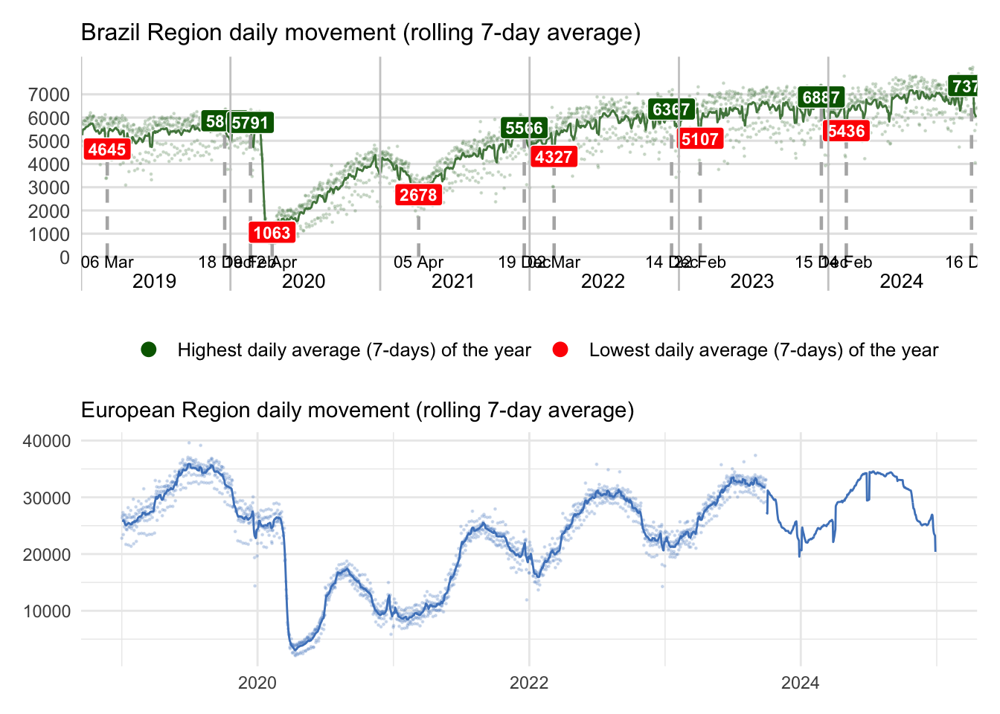
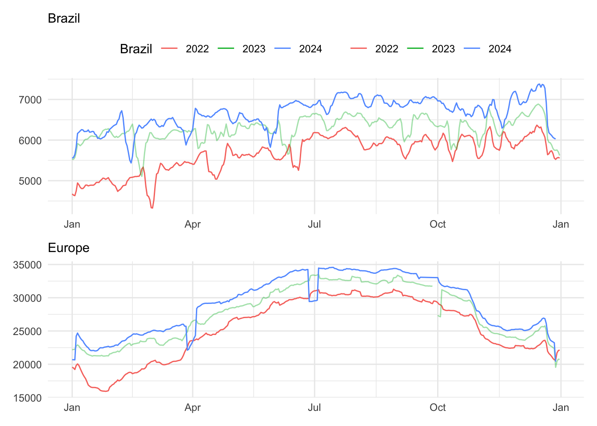
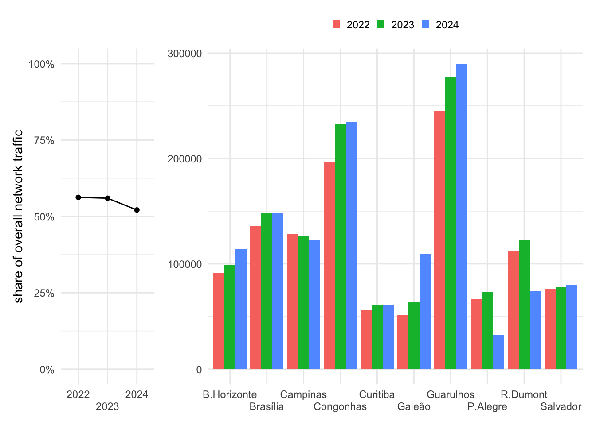
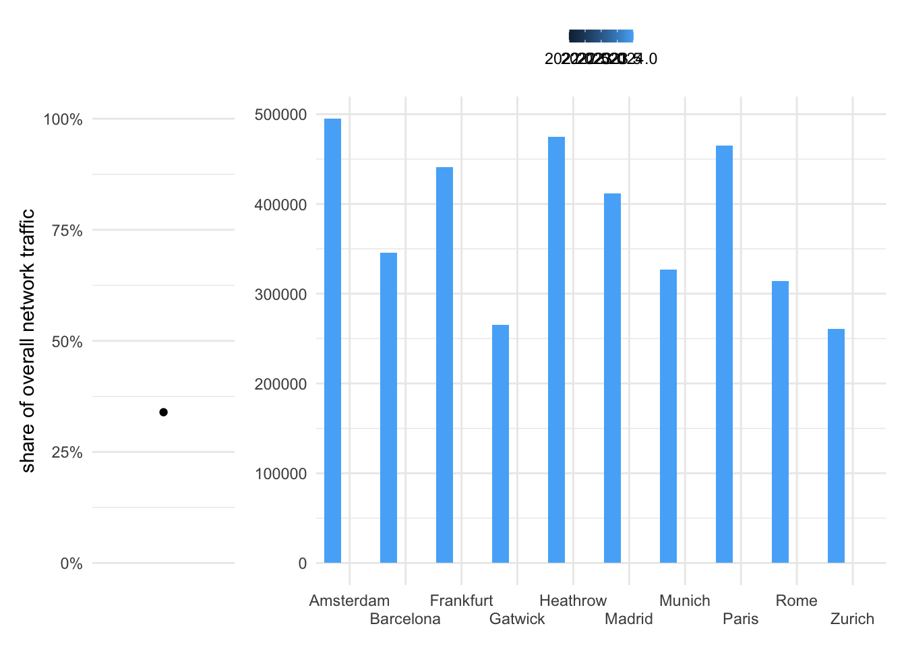
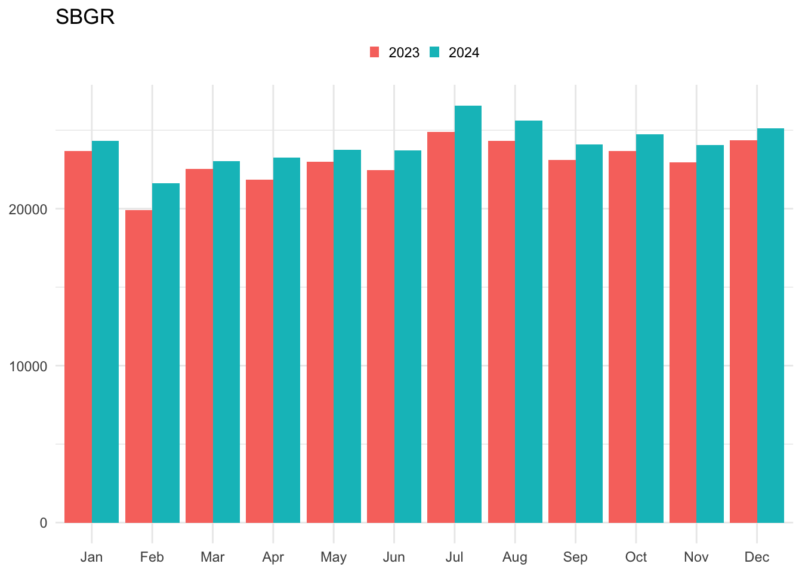
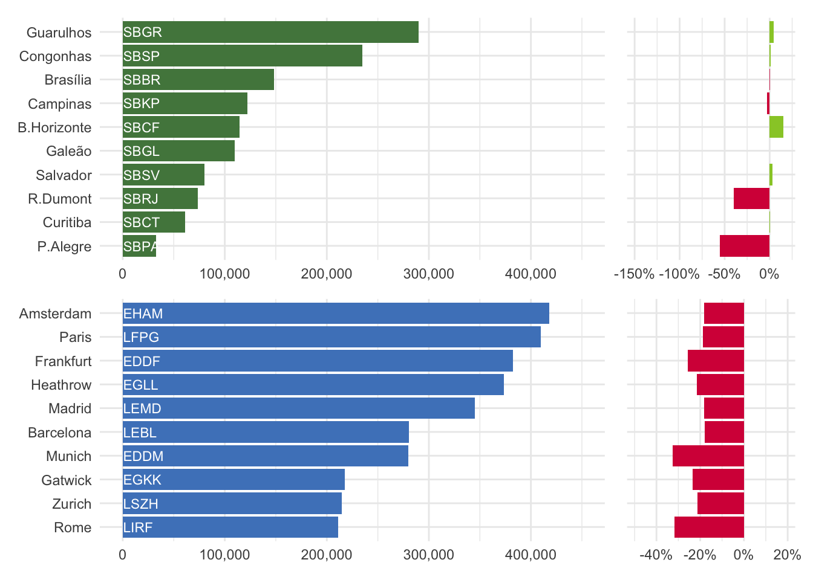
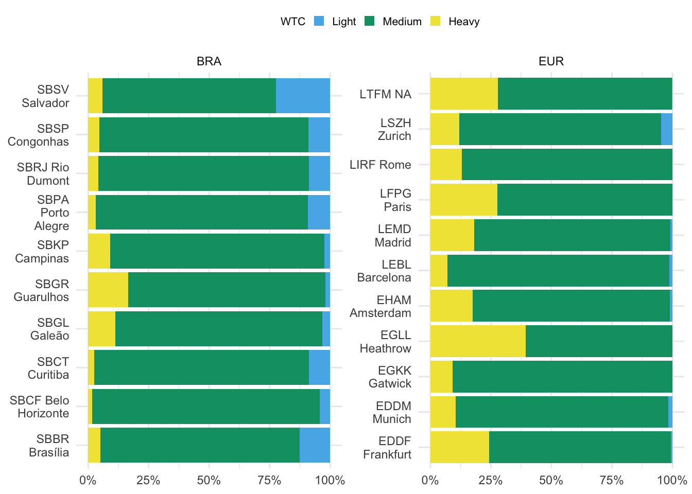
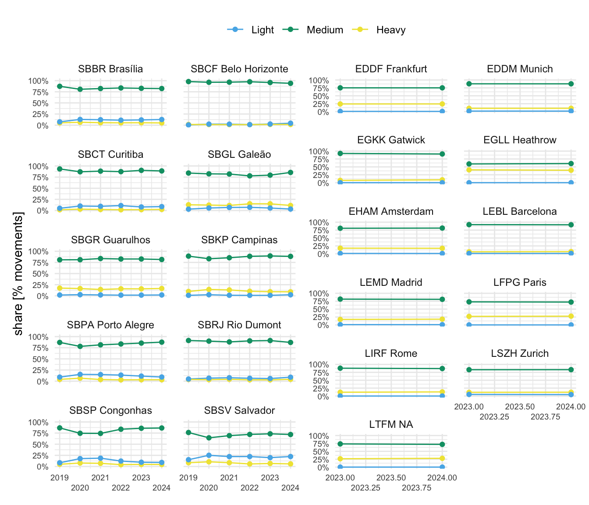

3 Traffic Characterisation
To facilitate operational comparisons, it is crucial to have a good understanding of the level and composition of air traffic. The preceding section provided an overview of the context and organisation of air navigation services in Brazil and Europe. This chapter presents some air traffic characteristics for both regions to provide a framework for the observed operational performance in subsequent parts of the report.
3.1 Network Level Air Traffic
Figure 3.1 shows the regional traffic development in Brazil and Europe. In both regions the unprecedented decline in air traffic occurred in March 2020 in the aftermath of the pandemic-declaration by the World Health Organisation. However, there is a difference in terms of the overall recovery. The European recovery is characterised by two waves, while a single setback is observed in Brazil in second quarter of 2021. The European pattern demonstrates the difficulty in the coordination of a joint policy of curbing the pandemic and managing travel related constraints. With different states in Europe introducing public health and travel constraints at differnt times, intra-European traffic was affected by the piece-meal approach. Brazil - and its policy on air transport - benefitted from single stance on policy implementation.
For Brazil, it is important to remember that Figure 3.1 shows the aggregated movements per airport at the whole network level. The shown total does not necessarily reflect the total number of flights. Another important observation related to the data is that Brazil’s number of airports served with the TATIC tool (Tower ATC System) has increased. Despite raising the processed total daily flight number, this difference is mostly transparent for this study as these additional airports handle only a small number of movements on a day-to-day basis.
The movements already surpassed the 2019 levels for the Brazilian region, confirming some economic recovery in the market. According to the CGNA (Brazilian Network Manager) assessment, general aviation is the leading actor in this frame. The share of “Light” aircraft in the fleet mix observed at Brazilian airports and the prevailing airline traffic levels still below the 2019 traffic in the airlines’ preferred airports help to confirm this thesis.
In terms of total network level air traffic, the European region is still lagging behind its pre-pandemic levels. Other analyses showed that low-cost carriers recovered more agile than the classical mainline carriers. The low-cost sector, thus, shows a higher numbers of operations than pre-pandemic as their financial model allowed for a more agile reaction in terms of staffing/crewing/servicing flights. The higher share can also be explained by a side-effect of the national support measures for some of the mainline carriers. These measures included freeing slots at major hubs and the reduction of domestic / short-haul operations. Accordingly, the European network is characterised by a change in the level of connectivity and frequency of services between the different airports.

- For Brazil, traffic in the first half of 2023 exceeded the pre-pandemic traffic level
- On a network level, the continual recovery of the traffic is on-going in Europe.
- The first half of 2023 saw traffic levels at about 90-95% of the pre-pandemic network traffic and started following a classical seasonal pattern. However, traffic recovery in Europe is not at the same level for each pre-pandemic service/connection. The recovery also resulted in a light modification of network connectivity. The Russian invasion of Ukraine resulted in the closure of a significant portion of the airspace (about 20%). However, the overall impact of the closure on air traffic - on a network level - was relatively small.
This high-level network perspective shows that traffic in both regions is comparable to pre-pandemic levels. It will be interesting to observe the further evolution and growth of air traffic.
3.2 Airport Level Air Traffic
The previous section showed the air traffic development on the network level. As airports represent nodes in this overall network, changes to the overall traffic situation will ripple down to the airport level. This demand on terminal and airport air navigation services forms a substantial input to understand how the operational performance measures in this report developed over time for the selected study airports. This reports looks in particular at the performance levels observed at 10 key airports in each region (c.f. scope)



Analyzing the movement of the leading Brazilian airports, it is evident that they were not responsible for the return to 2019 levels, considering that only Campinas - SBKP and Santos Dumont - SBRJ slightly exceeded 2019 levels. This phenomenon can be explained by the greater difficulty of airlines in resuming activity in contrast to general/business aviation. This last share is an essential component of the Brazilian air movement but is a rare user of main airports.

Figure 3.4 shows the annual change of the traffic served at the study airports in 2022 and the associated change of the traffic levels comparing 2022 and 2019.
With Campinas (SBKP) and Rio de Janeiro (SBRJ), there are two study airports in Brazil that serviced a higher level of traffic in 2022 than in 2019. Both airports are key nodes for the domestic traffic in Brazil. Salvador (SBSV) ranged at the pre-pandemic level. The other Brazilian airports have seen - on average - a decrease of 10-20% of traffic. This suggests that the observed network level increase in movements is distributed across the Brazilian network and not focussed on the airports covered in this study.
The European airport level traffic - on average - ranged at 20% below the pre-pandemic levels. Munich (EDDM) and Rome (LIRF) observed higher reductions. With an overall weaker recovery of the air traffic demand across Europe in 2022, a similar pattern emerged. The increased network level traffic (ranging about 10% under the pre-pandemic level) is distributed across the European network and other aerodrome connections.
3.3 Peak Day Traffic
While the annual traffic provides insights in the total air traffic volume and the associated demand, it does not provide insights on the upper bound of achievable daily movement numbers. The latter depends on demand, operational procedures and/or associated constraints, and the use of the runway system infrastructure. The peak day traffic is determined as the 99th percentile of the total number of daily movements (arrivals and departures). The measure represents thus an upper bound for comparison purposes.
3.4 Peak Day
THERE IS A LOT OF CODE AND WE WORK WITH INTERIM AND “FIX” FILES.
It is not transparent how these files / values are generated. On a first level, I could not fix it. What needs to be done:
- [] produce consistent daily traffic files in PBWG format for BRA and EUR
- [] rewrite functions to read the PBWG format and aggregate as desired
- [] if desired bind the BRA and EUR data set to build the graphics
== CLEAN UP CODE!
.years <- c(2023,2024)
pk_day_plot(.years)#| label: fig-peak-day
#| fig-cap: Airport peak daily traffic (2024)
#| message: false
peak_day_pct_plot(2024)?fig-peak-day shows the peak day traffic in 2022 for the study airports with reference to the number of runways. A varied picture can be seen for Europe. For European with more than 2 runways it needs to be noted that the runway system does not support independent operations of all available runways. Thus, the serviced peak traffic is also impacted by the runway system configuration.
The measure signals the use of the available runway system.
#| label: fig-timeline-peak-day
#| fig-cap: Evolution of peak-day traffic at study airports
#| message: false
timeline_peak_day(c(2019:2024))The year-to-year change of the peak day traffic between 2019 and 2022 is shown in ?fig-timeline-peak-day. For the European study airports, Frankfurt (EDDF), Munich (EDDM), Paris (LFPG), and Rome (LIRF) experienced a higher drop of the daily peak traffic in comparison to 2019. Despite the not yet fully recovered demand situation at London Gatwick (EGKK) and Zurich (LSZH) showed a moderate reduction of the daily peak traffic in 2022. This suggest that airports with limited airport runway capacity managed
3.5 Fleet Mix

Figure 3.5 depicts the observed share of different wake turbulence categories (WTC) across the study airports in 2024. In both regions, “medium” aircraft types are the predominant aircraft type. The fleet mix - and in particular the separation requirements between the different aircraft types - is an important influencing factor for the capacity and observed (and achievable) throughput. In general, a larger proportions of heavy aircraft or aircraft with longer runway occupancy times may result in lower throughput due to the required larger wake turbulence separation or time spent on the runway. The locally defined capacity values may therefore differ based on the predominant fleet mix and operational characteristics, and ultimately result in different observed peak movement numbers or influence surface and terminal operations.
In Brazil, a significant number of “light” types operated in 2023. For example Salvador (SBSV) serviced about 20% of “light” types. The major hubs, i.e. São Paulo Guarulhos (SBGR), Rio de Janeiro Galeão (SBGL), and Campinas (SBKP) observed a share of 15-20% of “heavy” aircraft. These airports serve also as destinations for international long-haul flights.
With the exception of Zurich (LSZH), the share of “light” types is negligible at the European study airport in 2023. London Heathrow (EGLL), Paris Charles de Gaule (LFPG), and Frankfurt (EDDF) observed the highest shares of “heavy” types.
Within the European region - and its multitude of national hubs - a significant number of international long-haul flights is operated at the chosen study airports. In Brazil, the highlighted airports, Guarulhos (SBGR), Galeão (SBGL), and Campinas (SBKP), play a major role in terms of international connectivity. It follows that medium and light types are used predominantly for inter-reginal connections. Based on the selected study airports, the underlying decentralised structure of the European network becomes more visible. Due to the geo-political composition, airports serving capitals or representing a main national hub are more frequent in Europe. This is in contrast to Brazil, where the international and heavy air traffic appears more centralised at 2-3 pre-dominant hubs.

On average, Figure 3.6 shows that the fleetmix remained fairly stable over the years. It is interesting to observe that the unprecedented decline in air transport during the pandemic phase did not substantially break this pattern. This suggests that the contraction of the traffic volume hit all segments at a similar rate 1.
3.6 Summary
This chapter described the overall evolution of air traffic in Brazil and Europe on the network and study airport level. Air traffic observed an unprecedented decline in both regions in response to COVID19. However, the recovery path in both regions differed. Overall, the Brazilian demand recovered substantially smoother than the European. As national governments varied in their assessments and introduction of public health measures, including travel restrictions, intra-European air connectivity observed several setbacks. On a network level, air traffic in Brazil exceeded the pre-pandemic level, whereas European traffic reaches about 5-10% below the pre-pandemic level.
In 2023, medium aircraft types were predominant in both regions across the studied airports. Brazil hosted proportionally more light aircraft, notably in Salvador (SBSV). At the same time, major hubs like São Paulo Guarulhos (SBGR) and Campinas (SBKP) handled substantial shares of heavy aircraft. Conversely, European airports, except Zurich (LSZH), had minimal shares of light types, with London Heathrow (EGLL), Paris Charles de Gaule (LFPG), and Frankfurt (EDDF) witnessing higher shares of heavy types. The European network demonstrated a decentralized structure with numerous international long-haul flights, while Brazil’s international and heavy air traffic was centralized in 3 primary hubs. Despite pandemic-induced declines in air transport, data suggests a stable fleet mix, indicating a consistent impact across traffic segments.
The overall air traffic demand situation is a key driver for the performance of air navigation services. The observed differences may impact - inter alia - separation and synchronisation of air traffic, and influence the observed performance reported in the other chapters of this report.
It must be noted that conceptually, the number of aircraft remained unchanged in the both regions. The higher utilisation of “heavy” aircraft for logistical support appeared to have offset the lower number international / long-haul passenger flights. For the first six month of 2023, this pattern is continued↩︎